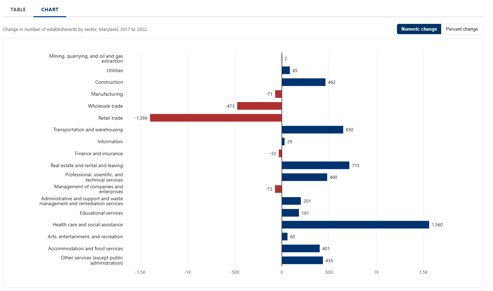

Maryland Economic Census Explorer
Built an interactive application to explore changes in Maryland's economy between 2017 and 2022, combining industry and geographic comparisons with inflation-adjusted indicators and downloadable data.
- Python
- JavaScript
- Data Visualization
- Census Bureau